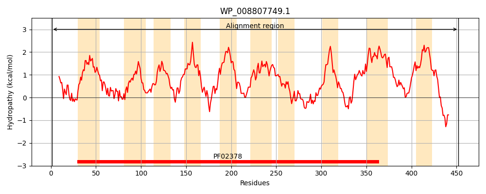
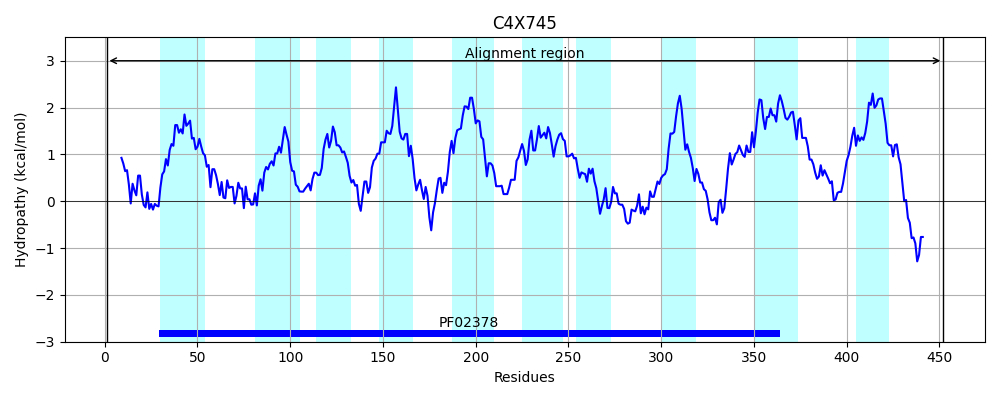
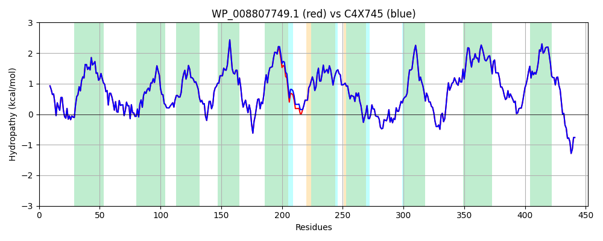

Hit Accession: C4X745
Hit TCID: 4.A.3.2.7
Hit Description: gnl|BL_ORD_ID|2530 gnl|TC-DB|C4X745|4.A.3.2.7 PEP-dependent phosphotransferase enzyme II OS=Klebsiella pneumoniae subsp. pneumoniae NTUH-K2044 GN=celB PE=4 SV=1
Mach Len: 452
e:0.000000
Query TMS Count : 10
Hit TMS Count: 10
TMS-Overlap Score: 10.500000
Predicted Substrates:CHEBI:50668;N-acetyl-beta-D-glucosaminyl-(1->4)-N-acetyl-aldehydo-D-glucosamine
BLAST Alignment:
Score: 2275 , Bit scores: 880 bits, E-value: 0.0e+00, Alignment length: 452, Percentage identity: 100
Query: 1 MSKVIDSLEKVLLPFAVKIGKQPHINAIKNGFIKLMPLTLAGAMFVLINNVFLSFGEGSFFYSMGIRLDASTIETLNGFKAIGGNVYNGTLGIMSLMAPFFIGSALAEERKVDPMAAGLLAVAAFMTVTPYSVGEAYAVGANWLGGQNIISGMIIGLVVAELFTFVIRRNWVIRLPDSVPGSVSRSFSALIPGFLILSIFGIISWALSSYGSNFHQIIMDSISTPLAAMGSVVGWAYVIFNSLLWFFGVHGSLALTALDNGIMTPWALENIALYNQYGSVDAAIEAGKQFHFWAKPMLDSYILLGGSGATLGLIIAIFIASRRADHRQVAKLALPSGIFQINEPILFGLPIIMNPVMFIPFVLVQPILAAITLAAYSLGIIPPVTNLAPWTMPTGLGAFFNSNGSVAALLVALFNLGVATLVYLPFVVLSNKAQTVIEQEESEEDIANALKF 452
MSKVIDSLEKVLLPFAVKIGKQPHINAIKNGFIKLMPLTLAGAMFVLINNVFLSFGEGSFFYSMGIRLDASTIETLNGFKAIGGNVYNGTLGIMSLMAPFFIGSALAEERKVDPMAAGLLAVAAFMTVTPYSVGEAYAVGANWLGGQNIISGMIIGLVVAELFTFVIRRNWVIRLPDSVPGSVSRSFSALIPGFLILSIFGIISWAL+SYGSNFHQIIMDSISTPLAAMGSVVGWAYVIFNSLLWFFGVHGSLALTALDNGIMTPWALENIALYNQYGSVDAAIEAGKQFHFWAKPMLDSYILLGGSGATLGLIIAIFIASRRADHRQVAKLALPSGIFQINEPILFGLPIIMNPVMFIPFVLVQPILAAITLAAYSLGIIPPVTNLAPWTMPTGLGAFFNSNGSVAALLVALFNLGVATLVYLPFVVLSNKAQTVIEQEESEEDIANALKF
Sbjct: 1 MSKVIDSLEKVLLPFAVKIGKQPHINAIKNGFIKLMPLTLAGAMFVLINNVFLSFGEGSFFYSMGIRLDASTIETLNGFKAIGGNVYNGTLGIMSLMAPFFIGSALAEERKVDPMAAGLLAVAAFMTVTPYSVGEAYAVGANWLGGQNIISGMIIGLVVAELFTFVIRRNWVIRLPDSVPGSVSRSFSALIPGFLILSIFGIISWALASYGSNFHQIIMDSISTPLAAMGSVVGWAYVIFNSLLWFFGVHGSLALTALDNGIMTPWALENIALYNQYGSVDAAIEAGKQFHFWAKPMLDSYILLGGSGATLGLIIAIFIASRRADHRQVAKLALPSGIFQINEPILFGLPIIMNPVMFIPFVLVQPILAAITLAAYSLGIIPPVTNLAPWTMPTGLGAFFNSNGSVAALLVALFNLGVATLVYLPFVVLSNKAQTVIEQEESEEDIANALKF 452 | Protein Hydropathy Plots: |
|---|
|  |  |
Pairwise Alignment-Hydropathy Plot:
|
|---|
|  |